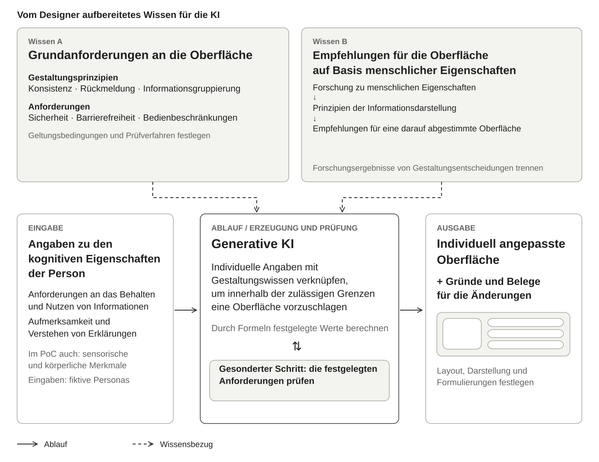
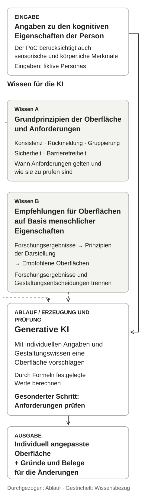
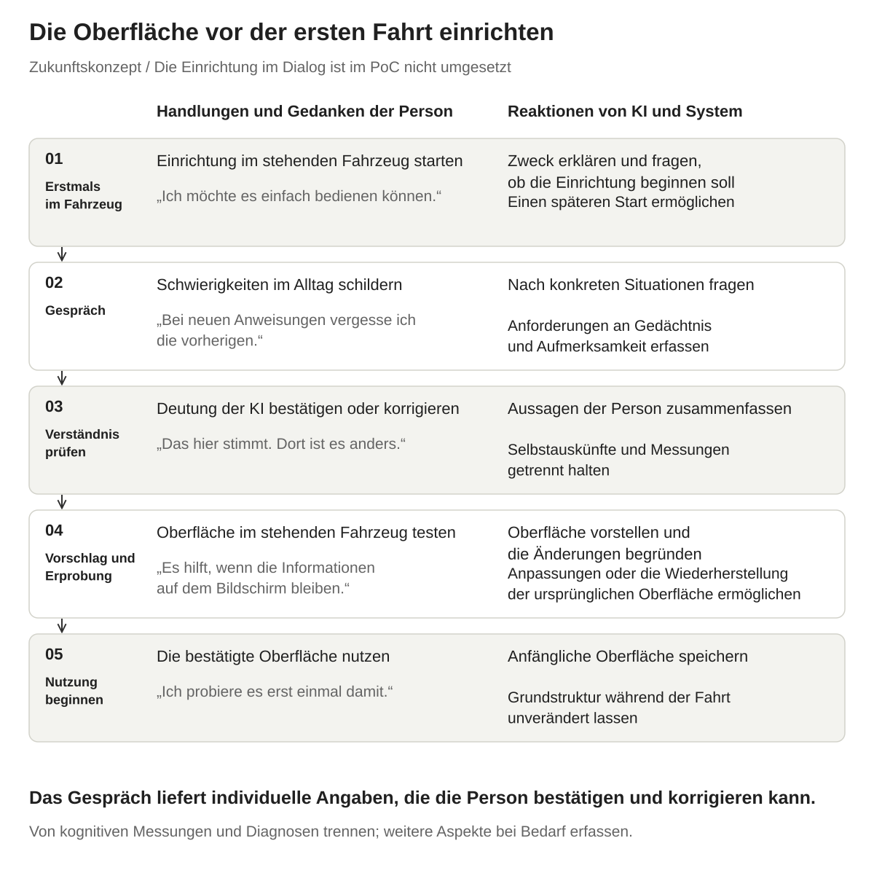

Personalisierte Benutzeroberflächen durch constraintbasiertes Design
August 2026
Überblick
Dieses Projekt schlägt ein System vor, das Informationen über kognitive Eigenschaften aufnimmt, die für die Nutzung von Benutzeroberflächen relevant sind, und daraus eine auf die jeweilige Person zugeschnittene Oberfläche erzeugt. Es verbindet Gestaltungsprinzipien für Benutzeroberflächen, Anforderungen an Sicherheit und Barrierefreiheit sowie Forschung zu menschlichen Eigenschaften.
Ich verwendete einen Ansatz, den ich constraintbasiertes Design nenne: Menschen legen die Anforderungen und deren Geltungsbedingungen fest; generative KI entwickelt innerhalb dieser Grenzen konkrete Vorschläge. Am Beispiel der Fahrzeugnavigation baute ich einen Machbarkeitsnachweis, der Oberflächen für 13 fiktive Personas erzeugt und die Ausgabe in einem getrennten Schritt anhand der Anforderungen validiert. Die Persona-Profile umfassen auch sensorische und körperliche Eigenschaften.
Der Vergleich zeigte eine deutliche Veränderung der Bildschirmanordnung als Reaktion auf eine körperliche Eigenschaft; die meisten Ausgaben änderten sich visuell dagegen nur wenig. Gebrauchstauglichkeit und Sicherheit wurden noch nicht mit Nutzenden geprüft. Die Arbeit half zu erkennen, welche Entscheidungen generativer KI überlassen werden können und welche Anforderungen den Spielraum für Personalisierung einschränken.
Hintergrund: Wie viele unterschiedliche Bedürfnisse kann eine Oberfläche erfüllen?
Die meisten Produkte bieten eine gemeinsame Oberfläche, die für möglichst viele Menschen gestaltet ist. Menschen unterscheiden sich jedoch darin, wie viele Informationen sie gleichzeitig verarbeiten, wie gut sie ihre Aufmerksamkeit lenken, wie leicht sie Formulierungen verstehen und wie präzise sie kleine Bedienelemente bedienen können. Eine für viele Menschen geeignete Oberfläche kann für eine einzelne Person dennoch schlecht passen.
Auch die Evaluation auf Gruppenebene hat Grenzen. Die 2013 veröffentlichten freiwilligen Richtlinien der NHTSA verlangen beispielsweise, dass mindestens 21 von 24 Teilnehmenden jedes Akzeptanzkriterium zum Blickverhalten erfüllen. Das bedeutet nicht, dass alle die Oberfläche gleich gut nutzen können. [1]
Selbst wenn ein Produkt Änderungen der Textgröße oder der angezeigten Informationsmenge erlaubt, müssen Nutzende die Einstellungen zunächst entdecken, ihren Bezug zu den eigenen Schwierigkeiten erkennen und eine geeignete Anpassung wählen. Ausgangspunkt war für mich die Frage, ob diese Optionen zu wenig genutzt werden und Menschen deshalb bei Oberflächen bleiben, die nicht zu ihnen passen.
Bei der Fahrzeugnavigation konkurrieren das Betrachten und Bedienen des Bildschirms mit der Aufmerksamkeit, die das Fahren verlangt. [1] Wenn eine schlecht passende Oberfläche diese Belastung erhöht, lohnt es sich zu untersuchen, ob eine von Beginn an angepasste Oberfläche sowohl Gebrauchstauglichkeit als auch Sicherheit unterstützen könnte.
Generative KI ermöglichte es, einen Prozess zu prototypisieren, der persönliche Informationen und Gestaltungswissen in eine Oberfläche übersetzt. Ich untersuchte, ob sich damit der Aufwand verringern ließe, für jede Person eine eigene Oberfläche von Hand zu gestalten.
Dieses Projekt untersuchte weder, wie häufig Menschen solche Einstellungen nutzen, noch, wie sich eine schlecht passende Oberfläche auf das Unfallrisiko auswirkt.
Vorschlag: Persönliche Informationen mit zwei Arten von Gestaltungswissen verbinden
Das System erhält Informationen über kognitive Eigenschaften, die für die Nutzung einer Oberfläche relevant sind. Für diesen Machbarkeitsnachweis wurden fiktive Personas verwendet, die auch sensorische und körperliche Eigenschaften umfassten. Die KI berücksichtigt diese Informationen gemeinsam mit zwei vorab aufbereiteten Wissensbeständen: grundlegenden Gestaltungsregeln für Benutzeroberflächen und Wissen, das menschliche Eigenschaften mit empfohlenen Oberflächengestaltungen verknüpft.
Die KI erzeugt innerhalb der zulässigen Grenzen eine Oberfläche, die anschließend getrennt anhand der Anforderungen geprüft wird. Die Ausgabe enthält die angepasste Oberfläche sowie eine Erklärung, was geändert wurde und warum.


Eingabe: Informationen über die Person
Zu den Eingaben gehört, wie leicht eine Person Informationen behalten und nutzen kann, wie schnell andere Reize sie ablenken und welche Arten von Erklärungen sie am leichtesten versteht. Die Implementierung berücksichtigt auch Sehvermögen und manuelle Geschicklichkeit. Verwendet werden Informationen, die für die Interaktion mit einer Oberfläche relevant sind; der Bildschirm wird nicht allein aus einer Diagnose abgeleitet.
Wissensbestand A: Grundanforderungen an Benutzeroberflächen
Dieser Wissensbestand umfasst grundlegende Gestaltungsprinzipien: Konsistenz, Rückmeldung zu Handlungen, Gruppierung von Informationen sowie Sichtbarkeit von Text und Bedienelementen. Er definiert außerdem Einschränkungen für die Interaktion im Fahrzeug und Anforderungen an die Barrierefreiheit sowie die Situationen, in denen sie gelten.
Wissensbestand B: Menschliche Eigenschaften mit empfohlenen Oberflächen verbinden
Dieser Wissensbestand verknüpft Forschung zu menschlichen Eigenschaften zunächst mit Prinzipien der Informationsdarstellung und dann mit der Oberflächengestaltung. Wenn es beispielsweise schwerfällt, Informationen während einer Aufgabe im Gedächtnis zu behalten, legt das eine Verringerung der Gedächtnisanforderungen nahe. Daraus kann folgen, notwendige Informationen auf dem Bildschirm sichtbar zu lassen.
Forschungsergebnisse liefern nicht zwangsläufig konkrete Gestaltungswerte für eine Navigationsoberfläche. Ich unterscheide zwischen dem, was durch Forschung belegt ist, und den gestalterischen Entscheidungen, die ich daraus ableite. Verbesserungen, die allen zugutekommen, gehören zu den Grundregeln und werden nicht als Ergebnisse der Personalisierung gezählt.
Vorgeschlagenes Erlebnis: Vor der ersten Fahrt eine passende Oberfläche finden
Zukunftskonzept: Die Einrichtung im Gespräch wurde in diesem Machbarkeitsnachweis noch nicht implementiert.
Man stelle sich vor, zum ersten Mal auf dem Fahrersitz eines neuen Autos zu sitzen. Während das Auto steht, fragt ein KI-Agent nach den üblichen Erfahrungen. Statt technische Einstellungen zu durchsuchen, beschreibt man, was schwerfällt und was gut funktioniert.

-
Vor der ersten Fahrt: Das Gespräch beginnen
KI: „Damit ich den Bildschirm an Sie anpassen kann: Möchten Sie mir ein wenig darüber erzählen, wie Sie normalerweise Benutzeroberflächen nutzen? Wir können das auch später machen.“
Die nutzende Person versteht den Zweck und entscheidet, ob sie jetzt oder später beginnen möchte.
-
Gespräch: Schwierigkeiten beschreiben
KI: „Wenn Navigationsanweisungen rasch aufeinanderfolgen, was fällt Ihnen dann schwer nachzuvollziehen?“
Nutzende Person: „Wenn die nächste Anweisung kommt, habe ich manchmal schon vergessen, was die vorherige war.“
Die KI fragt nach konkreten Situationen und erkennt Schwierigkeiten im Zusammenhang mit Gedächtnis und Aufmerksamkeit.
-
Verständnis abgleichen: Korrekturen durch die nutzende Person ermöglichen
KI: „Es klingt so, als wäre es für Sie leichter, die Informationen auf dem Bildschirm zu sehen, als sich die einzelnen Schritte zu merken. Habe ich das richtig verstanden?“
Die nutzende Person bestätigt oder korrigiert die Interpretation der KI. Selbstauskünfte aus dem Gespräch bleiben von kognitiven Messwerten und Diagnosen getrennt. Informationen, die eine Messung erfordern, würden gesondert erhoben.
-
Vorschlag und Erprobung: Änderungen erklären und die Oberfläche ausprobieren
KI: „Damit Sie sich weniger merken müssen, schlage ich einen Bildschirm vor, der sowohl die aktuelle Handlung als auch den nächsten Schritt zeigt.“
Im stehenden Fahrzeug probiert die nutzende Person Aufgaben wie die Zielauswahl aus. Sie kann sagen: „Die vorherige Version war übersichtlicher“ oder „Diese Formulierung würde ich ändern“. Anschließend lässt sich der Vorschlag anpassen oder die ursprüngliche Oberfläche wiederherstellen.
-
Die bestätigte Oberfläche nutzen
Die bestätigte Oberfläche wird als Ausgangskonfiguration gespeichert. Ihre Grundstruktur bleibt während der Fahrt gleich, sodass sich die nutzende Person auf das Gelernte verlassen kann. Im stehenden Fahrzeug kann sie die Konfiguration erneut aufrufen und anpassen.
Das Gespräch soll eine passende Ausgangskonfiguration ermöglichen – in einem Austausch, in dem die nutzende Person ihre Bedürfnisse erläutern und Missverständnisse korrigieren kann. Es dient nicht dazu, sie einmalig einer Kategorie zuzuordnen.
Implementierung: Feste Anforderungen von Entscheidungen der KI trennen
Ich implementierte die Prozesskette von der Aufnahme persönlicher Eigenschaften über die Generierung, Validierung und Darstellung bis zum Vergleich der Oberflächen. Statt eines Gesprächs verwendete ich 13 fiktive Personas mit unterschiedlichen Eigenschaften als Eingabe.
Ich wählte die Fahrzeugnavigation, weil sie konkrete Anforderungen bietet: Bildschirmfläche, Größe der Berührungsflächen, angezeigte Informationsmenge und während der Fahrt zulässige Interaktionen.
Der Ansatz des constraintbasierten Designs
Constraintbasiertes Design bedeutet in diesem Projekt, dass Menschen Anforderungen und ihre Geltungsbedingungen definieren und die KI innerhalb dieser Grenzen Lösungen vorschlägt.
Ein regelbasierter, parametrischer Ansatz legt vorab fest, welcher Wert oder welche Option zu jeder Eingabe gehört. Hier definierte ich die zulässigen Bereiche und die Belege für jede Entscheidung. Die generative KI durfte Werte und Formulierungen wählen, die noch nicht festgelegt waren. Die Implementierung kombiniert berechnete Werte mit KI-generierten Entscheidungen.
| Was die Belege aussagen | Umsetzung |
|---|---|
| Ein konkreter Wert oder mathematischer Zusammenhang ist belegt | Den Wert innerhalb der überprüften Bedingungen und des Geltungsbereichs berechnen |
| Die Richtung einer Anpassung ist bekannt, ihr Ausmaß jedoch nicht | Einen Wert wählen, der mit dieser Richtung und den Constraints vereinbar ist, und ihn als ungeprüfte gestalterische Entscheidung dokumentieren |
| Die Belege bestimmen keine geeignete Wahl | Das Ergebnis als explorativen Vorschlag behandeln, der evaluiert werden muss |
Bei der Übertragung von Forschungsergebnissen in Entscheidungen zur Oberfläche dokumentierte ich Quellen, Anwendungsbedingungen und gestalterische Einschätzungen. Die erzeugte Oberfläche enthält Begründungen für die Änderungen. So lässt sich nachvollziehen, warum einer bestimmten Person ein bestimmter Entwurf vorgeschlagen wurde.
Die generierte Oberfläche in einem getrennten Schritt validieren
Die Oberfläche wird als strukturierter Datensatz erzeugt, der Bildschirmelemente und deren Anordnung beschreibt, und anschließend aus diesen Daten dargestellt. Code prüft numerische und strukturelle Anforderungen. Eine getrennte Prüfung mit einem großen Sprachmodell (LLM) bewertet einige Anforderungen, deren Prüfung ein Verständnis der Bedeutung verlangt. Das System dokumentiert außerdem Punkte außerhalb der automatisierten Prüfung sowie Punkte, die sich wegen fehlender Informationen nicht überprüfen lassen.
Diese Prüfungen stellen fest, ob die Ausgabe die definierten Anforderungen erfüllt. Ob sie leichter zu bedienen oder sicherer ist, muss weiterhin mit Nutzenden untersucht werden.
Werden während der Gestaltung widersprüchliche Anforderungen entdeckt, macht die KI sie sichtbar, und ein Mensch entscheidet über ihre Überarbeitung. Die KI ändert die Anforderungen nicht eigenständig bei jeder Generierung einer Oberfläche.
Oberflächenvergleich: Eine deutliche und eine kaum veränderte Anordnung
Als Vergleichsbasis dient eine gemeinsame Standardoberfläche, die ohne persönliche Eigenschaften als Eingabe generiert wurde. Ich verglich sie mit Oberflächen, die aus persönlichen Eigenschaften entstanden, jeweils mit demselben Funktionsumfang.
Die folgenden Bilder zeigen Ausgaben des Prototyps, keine Vorher-nachher-Neugestaltungen eines kommerziellen Navigationssystems. Die Personas sind fiktive Eingaben zur Untersuchung einzelner Eigenschaften; sie stehen nicht für reale Nutzende.
Größere Berührungsflächen
PS-12: Eine Persona mit Schwierigkeiten bei präzisen Touch-Eingaben
PS-12 hat dasselbe Alter sowie dieselben kognitiven und sensorischen Eigenschaften wie die Referenzpersona PS-01; nur die manuelle Geschicklichkeit unterscheidet sich. In den Bildern sind die Berührungsflächen größer, und die Zahl der Elemente in der Bildschirmmitte sinkt von sieben auf vier. Die festen Schaltflächen am unteren Rand sind dabei nicht mitgezählt.
Gemeinsame Standardoberfläche


Größere Berührungsflächen bedeuten, dass auf einem einzelnen Bildschirm weniger Elemente auswählbar sind. Der Entwurf soll denselben Funktionsumfang erhalten; wie leicht sich nachfolgende Ansichten erreichen lassen, kann diese Bildschirmaufnahme allein jedoch nicht zeigen.
Eine weitgehend unveränderte Anordnung
PS-01: Die Referenzpersona
Die Textgröße unterscheidet sich leicht, doch Anzahl und Anordnung der Elemente sowie die Größe der Berührungsflächen bleiben nahezu gleich. Mit dieser Kombination von Regeln und Eingaben wich die generierte Anordnung nicht wesentlich von der gemeinsamen Standardoberfläche ab.


Ergebnisse und Diskussion: Wie viel Spielraum blieb für die Generierung?
Der zusätzliche Nutzen generativer KI bleibt unbewiesen
In meinem visuellen Vergleich war PS-12 die einzige Ausgabe mit einer deutlich anderen Bildschirmanordnung. Andere Ausgaben unterschieden sich in Formulierungen und Einstellungen; anhand ihres Erscheinungsbilds war jedoch kein wesentlicher Unterschied im Nutzen erkennbar.
Die Änderungen für PS-12 ließen sich auch über Einstellungen zur Darstellungsgröße und Informationsmenge erreichen. Es könnte einen Mehrwert bieten, mit einer passenden Oberfläche zu beginnen, ohne diese Einstellungen selbst finden zu müssen. Dieses Erlebnis muss getrennt von der Frage evaluiert werden, ob generative KI zur Erzeugung der Oberfläche erforderlich ist.
Dieser Machbarkeitsnachweis zeigte weder, dass die Anpassung an kognitive Eigenschaften die Aufgabenleistung verbesserte, noch, dass generative KI eine bessere Oberfläche erzeugte als ein regelbasierter Ansatz.
Der implementierte Gestaltungsraum war eng
Unter Berücksichtigung der Mindestgrößen für Text und Berührungsflächen, der verfügbaren Bildschirmfläche und der Grenzen für die angezeigte Informationsmenge blieben nur wenige Anordnungen möglich. Viele Teile der Implementierung waren zudem durch Berechnungen oder feste Strukturen bestimmt. Der KI blieb deshalb wenig Spielraum bei der Wahl zwischen zulässigen Alternativen.
Bei Formulierungen bestand weiterhin Flexibilität. Diese Unterschiede waren jedoch weniger sichtbar als Änderungen der Anordnung, und die visuelle Beurteilung konnte ihren Nutzen nicht vollständig erfassen. Mein Schluss war, dass eine Bewertung generativer KI mehrere zulässige Vorschläge erfordert, deren Unterschiede für das Nutzungserlebnis von Bedeutung sind.
Diese Erkenntnis gilt für die von mir gesammelten Regeln, die ausgewählten Oberflächenparameter und die von dieser Implementierung unterstützten Entwürfe. Sie belegt keine allgemeine Grenze der Fahrzeugnavigation oder personalisierter Oberflächen.
Ich habe nicht den vollständigen Text jeder relevanten JIS-, ISO- oder sonstigen Norm direkt geprüft. Das Gestaltungswissen stellte ich aus verfügbaren Fachartikeln, offiziellen Hinweisen, öffentlichen Daten sowie Volltexten oder Vorschauen einiger Normen zusammen. Der Umfang dieser Quellen könnte die verfügbaren Gestaltungsmöglichkeiten beeinflusst haben. Weitere Prüfung ist nötig, um festzustellen, ob die Normen zusätzliche Möglichkeiten eröffnen oder weitere Einschränkungen vorgeben würden.
Die Zusammenarbeit mit KI verbesserte die Regeln selbst
Ein weiteres Ergebnis war der Prozess, Anforderungen für die Generierung zu definieren und überprüfbar zu machen.
| Erkanntes Problem | Gestalterische Reaktion |
|---|---|
| Für dasselbe Element galten mehrere Untergrenzen, deren Zusammenwirken unklar war | Geklärt, wie die Grenzen gemeinsam gelten, sodass keine verletzt wird |
| Eine nur für die Fahrt vorgesehene Anforderung galt auch im stehenden Fahrzeug | Festgelegt, in welchem Fahrzustand die jeweilige Anforderung gilt |
| Die sprachliche Komplexität und das Vorhandensein von Symbolen waren zu einer Gestaltungsdimension zusammengefasst | In unabhängige Dimensionen getrennt und dadurch unnötig ausgeschlossene Optionen wieder zugelassen |
| Die KI verwendete Anforderungen, die nicht für die jeweilige Ausgabe galten | Festgelegt, welche Anforderungen für die jeweilige Ausgabe heranzuziehen sind |
| Für die KI vorgesehene Entscheidungen waren bereits in der Implementierung festgelegt | Die Aufgabenverteilung zwischen Spezifikation und Implementierung überarbeitet |
Die KI erkannte Probleme, ich bewertete sie, und die Entscheidungen flossen in die Gestaltung ein. Dieser iterative Prozess klärte, welche Anforderungen für alle gelten sollten und wo eine Oberfläche personalisiert werden konnte.
Nächste Schritte: Personalisierung und die Rolle generativer KI untersuchen
Im nächsten Schritt sollen zwei Fragen getrennt untersucht werden.
Erstens: Wie wertvoll ist ein Erlebnis, das eine geeignete Ausgangsoberfläche bereitstellt, ohne dass die nutzende Person sie selbst konfigurieren muss? Dafür müssten das Gespräch, Möglichkeiten zur Korrektur des KI-Verständnisses und eine Erprobung der Oberfläche implementiert werden. Anschließend wären die Verlässlichkeit der Eingaben und die Belastung der nutzenden Person zu bewerten.
Zweitens: In welchen Gestaltungskontexten könnten Unterschiede zwischen KI-generierten Vorschlägen das Erlebnis verbessern? Ich möchte Kontexte erkunden, in denen die Anforderungen mehrere zulässige Möglichkeiten zur Organisation von Informationen und Interaktionsabläufen offenlassen.
Eine Studie mit realen Nutzenden würde drei Oberflächen bei derselben Aufgabe vergleichen: die gemeinsame Standardoberfläche, eine regelbasierte Oberfläche, die anhand persönlicher Eigenschaften angepasst wurde, und eine KI-generierte Oberfläche. Bearbeitungszeit, Fehler, Blickverhalten und subjektive Belastung würden helfen, die Effekte der Personalisierung von denen des Einsatzes generativer KI zu unterscheiden.
Außerdem möchte ich die relevanten Normen genauer prüfen und die Unterscheidung zwischen Forschungsbelegen und gestalterischen Entscheidungen schärfen. Neben der Überprüfbarkeit der Anforderungen besteht die nächste Aufgabe darin, innerhalb dieser Anforderungen Optionen zu erhalten, die für Nutzende bedeutsame Unterschiede bieten.
Quellen
- NHTSA, Visual-Manual NHTSA Driver Distraction Guidelines for In-Vehicle Electronic Devices (2013). Es handelt sich um freiwillige Richtlinien. Die Akzeptanzkriterien zum Blickverhalten stehen in VI.E; Aufmerksamkeit und Risiko werden unter anderem in I.C behandelt. Daraus folgt nicht, dass der Machbarkeitsnachweis als konform mit diesem Test zertifiziert wurde. Dokument im Federal Register lesen